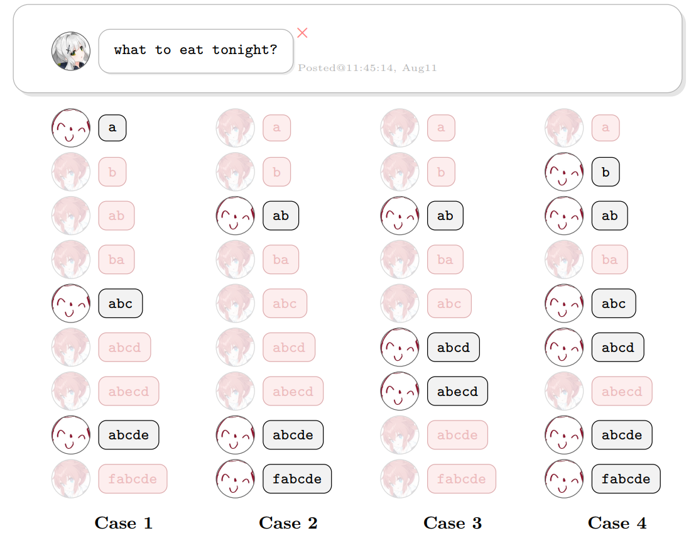
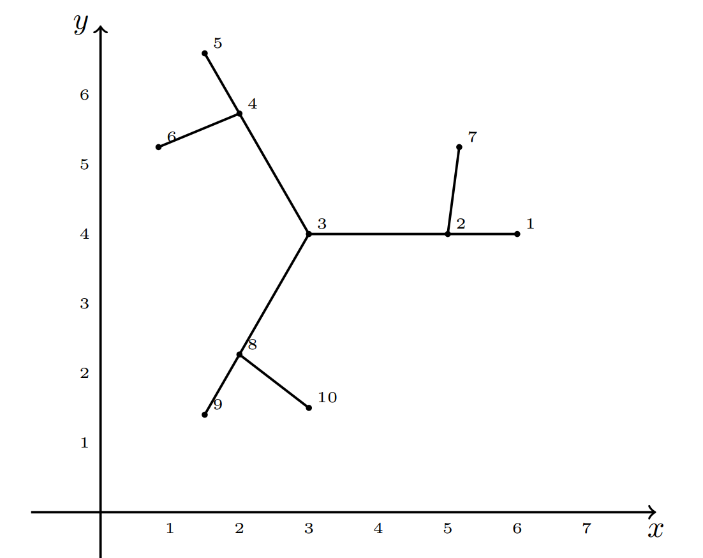
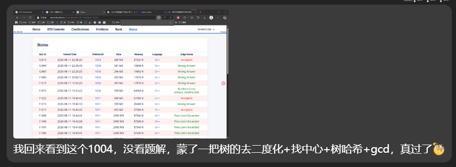

2026“钉耙编程”中国大学生算法设计暑期联赛（07）
1001 今晚吃什么【AC 自动机 Fail 树 + 虚树路径差分覆盖 + dfn 序加速树形 DP 】
Problem Description
本场比赛完整题目集参见：PDF 题面
“今晚吃什么？”真是一个难以解决的问题。
Hare 在竞赛网站上发布了有关“今晚吃什么”的帖子。不一会儿，帖子下方按照时间顺序就有了 则评论，记作 。每则评论都是一个字符串，保证评论的长度随发布时间单调不降，也保证任意两则评论不完全相同。
不过，Hare 发现有一些是 Maki 骇入了网站，伪装成参赛选手发布的评论。Hare 已知，假如去除了 Maki 伪装发布的评论，剩下的参赛选手发布的评论满足：
每一则评论一定是在上一则评论的基础上，添加一段可能为空的字符串作为前缀，以及一段可能为空的字符串作为后缀所得到的。也就是说，上一则评论一定是本则评论的子串。
Hare 想知道，基于已知信息，对于 ，若恰有 则评论是伪装的，那么有多少种可能的伪装情况？答案对 取模。两种情况不同当且仅当存在一则评论，在其中一种情况下是 Maki 发布的，而在另外一种情况下是参赛选手发布的。
Input
本题包含多组测试数据。
首先在第一行输入一个整数 （）表示测试数据组数。
接下来对于每一组测试数据：
第一行包含一个整数 （）表示评论数量。
接下来 行，第 （）行包含一个字符串 （），表示第 则评论。保证输入的字符串长度单调不降，保证输入的任意两个字符串不完全相同，保证单组测试数据内输入的字符串长度之和不超过 。
保证所有测试数据输入的字符串均只包含小写拉丁字母，长度之和不超过 。
Output
对于每一组测试数据，输出包含一行 个整数表示 Maki 在 的条件下，可能的伪装情况数对 取模的值。
Sample Input
2
9
a
b
ab
ba
abc
abcd
abecd
abcde
fabcde
11
umm
ummspring
ummnahida
ummturkey
ummpastdays
ummamberconjecture
ummnpcnpcnpcnpcnpc
ummstrawberrystrawberry
ummkurokokurokokurokokuroko
ummcomputercomputercomputer
ummtoptreetoptreetoptreetoptreeSample Output
0 0 0 2 11 25 32 25 9
0 0 0 0 0 0 0 0 0 10 11Hint

对于第一组测试数据，在 的条件下，如上图：
情况 1 认为，评论 a、abc、abcde 是参赛选手发布的。该情况合理，因为它满足已知信息给出的条件。
情况 2 通过验证也合理。它与情况 1 不完全一致，因此 时的答案需要同时统计到它们。
情况 3 认为，评论 ab、abcd、abecd 是参赛选手发布的。该情况不合理，因为 abcd 不是 abecd 的子串。
情况 4 通过验证也不合理，因为 Maki 伪装的评论数量应当为 ，而不是情况 4 中的 。
Solution
- 首先，为什么是 AC 自动机？
- 因为题目关注的是串之间的关系，而不是串内部的关系
- 设 表示以字符串 结尾长度为 的串序列个数
- 问题来了，如何快速处理子串呢？
- AC 自动机上面，建立之后，走过一个大串之后
- 到达的节点，在 Fail 树上，到根的路径，均是 pop 掉若干前缀，所命中的子串
- 但是，并不是说， AC 自动机完整读取一个串就行了，这只是匹配了最后一个前缀的各种后缀匹配
- 事实上，需要在读取字符之后，立即匹配，
- 即，匹配完所有前缀的各种后缀，取并集，才算完全
- 如何求并集呢？
- 可以在线遍历的时候，动态补充未覆盖的链
- 显然，在跳转节点的前后
- 我们发现，求前后节点的 LCA 可知，新增的链必然等于
- 题目有一个值得注意的条件：
- 长度单调不降，且不完全相同
- 这隐含着：
- 前面的字符串，一定不包含后面的字符串
- 同时提醒求并集的时候
- 匹配完成最后一个字符之后，不要让自己转移给自己，也就是说，最后一次的前缀要去除自己
- 第一次先布置好 1 与前缀和
- 然后预处理好
- 由此，重复 次
- 然后每一次进行前，预处理前缀和
- 然后开始遍历每一个串
- 第 次遍历，得到长度为 的序列计数
- 【坑点】
- 虚树路径覆盖，没想到可以这么求
- dfn 序加速 DP
- 又一个 卡常 Trick！这里我循环 次 prepare，重复遍历树求前缀和，一个 2000ms+ TLE，一个 800ms AC
- 其实很久以前我也犯过这个错误，一个进行 n 多轮 树形 DP 父子递推，如果不用 dfn 序 DP 的话，进行 t 次 vector 图 dfs DP，时间常数大很多直接 TLE，记得是那是一道需要多次计算 树形DP 进行 根号级别值域分块二分 的题目！
Code
#include<bits/stdc++.h>
using namespace std;
using ll = long long;
const int N = 2e5 + 5;
const int mod = 998244353;
inline int add(int a,int b) {a+=b;if(a>=mod)a-=mod;return a;}
inline int sub(int a,int b) {a-=b;if(a<0)a+=mod;return a;}
int n;
string s[N];
int id[N];
vector<int> pos[N], neg[N];
int tmp[N];
int ans[N];
struct ACAM {
int tot;
int ch[N][26], fa[N];
int dep[N], st[N][__lg(N)+1], val[N], P;
int dfn[N], dfncnt, rnk[N];
vector<int> e[N];
void init() {
memset(ch,0,sizeof(ch[0])*(tot+1));
memset(fa,0,sizeof(fa[0])*(tot+1));
memset(val,0,sizeof(val[0])*(tot+1));
for(int i = 0; i <= tot; i++) e[i].clear();
tot = 0;
dfncnt = 0;
}
int insert(const string& s,vector<int>& vec) {
int cur = 0;
for(auto c:s) {
c-='a';
if(!ch[cur][c]) ch[cur][c] = ++tot;
cur = ch[cur][c];
vec.push_back(cur);
}
val[cur]++;
return cur;
}
void build() {
queue<int> Q;
for(int j = 0;j < 26;j++) {
if(ch[0][j]) Q.push(ch[0][j]);
}
while(Q.size()) {
int u = Q.front(); Q.pop();
for(int j = 0; j < 26; j++) {
if(ch[u][j]) {
fa[ch[u][j]] = ch[fa[u]][j];
Q.push(ch[u][j]);
} else {
ch[u][j] = ch[fa[u]][j];
}
}
}
for(int i = 1; i <= tot; i++) {
e[fa[i]].push_back(i);
}
P = __lg(tot);
dfs(0);
prepare();
}
void dfs(int u) {
dep[u] = dep[fa[u]] + 1;
st[u][0] = fa[u];
dfn[u] = ++dfncnt;
rnk[dfncnt] = u;
for(int p = 1; p <= P; p++) {
st[u][p] = st[st[u][p-1]][p-1];
}
for(auto v:e[u]) dfs(v);
}
int lca(int a, int b) {
if(dep[a] < dep[b]) swap(a, b);
for(int p = P; p >= 0; p--)
if(dep[st[a][p]] >= dep[b]) a = st[a][p];
if (a == b) return a;
for(int p = P; p >= 0; p--)
if(st[a][p] != st[b][p]) a = st[a][p], b = st[b][p];
return st[a][0];
}
// 【坑点】 dfn 序加速 树形 DP ，尤其是反复调用的那种
void prepare() {
for(int i = 1;i<=dfncnt;i++) {
int u = rnk[i];
val[u] = add(val[u], val[fa[u]]);
}
}
}AC;
void solve() {
cin >> n;
AC.init();
ll tot = 0;
for (int i =1 ; i <= n; i++) {
cin >> s[i];
tot += s[i].size();
pos[i].clear();
neg[i].clear();
id[i] = AC.insert(s[i], pos[i]);
}
AC.build();
for (int i = 1; i <= n; i++) {
sort(pos[i].begin(), pos[i].end(), [](int a,int b) {return AC.dfn[a] < AC.dfn[b];});
for (int j = 0; j + 1 < pos[i].size(); j++)
neg[i].push_back(AC.lca(pos[i][j], pos[i][j+1]));
}
fill(ans,ans+1+n,0);
fill(tmp,tmp+1+n,1);
ans[n-1] = n;
int sn = sqrt(2*tot) + 5;
sn = min(sn, n);
for (int _ = 2; _ <= sn; _++) {
for(int i = 0; i <= AC.tot; i++)
AC.val[i] = 0;
for (int i = 1; i <= n; i++)
AC.val[id[i]] = tmp[i];
AC.prepare();
for (int j = 1; j <= n; j++) {
tmp[j] = sub(0, tmp[j]);
for(auto u:pos[j]) tmp[j] = add(tmp[j], AC.val[u]);
for(auto u:neg[j]) tmp[j] = sub(tmp[j], AC.val[u]);
ans[n-_] = add(ans[n-_], tmp[j]);
}
}
for (int i = 0; i <= n-1; i++) cout << ans[i] << " ";
cout << "\n";
}
int main() {
ios::sync_with_stdio(0); cin.tie(0); cout.tie(0);
int T = 1;
cin >> T;
while (T--) solve();
}1004 今晚吃转转【树的去二度化+找中心+树哈希+gcd】
Problem Description
即便是最细小的枝桠也能孕育无限可能。
地脉正在颤动，世界树岌岌可危。原本的世界树可以被看作一棵包含 个点与 条边的无根树 被绘制在平面上。 中的第 （）个点在坐标 （）处，点的坐标两两不同。 的每条边都是连接两个端点的线段，连接后平面上的图形就被称为 的图像。注意，图像不能进行平移，缩放，旋转，轴对称等任何操作。
由于地脉紊乱，世界树被迫旋转。现在，平面中出现了一个紊乱点 （），使得世界树 的图像以 为中心顺时针旋转了 弧度，其中 是一个正整数。注意紊乱点坐标是任意的，可以与世界树某一个点重合，也可以落在世界树某一条边上。
作为新生的小吉祥草王，纳西妲只知道世界树 的形态而不知道它的图像。纳西妲想要知道，对于哪些正整数 ，存在一个为 中每个点赋予两两不同的坐标以及选取紊乱点坐标的方式，使得：
- 的图像中，任意两条边对应的线段除公共端点外不相交（包括某一条边的端点落在另一条边上的情况）。
- 的图像旋转后与其旋转前完全重合。
注意，判断重合时不能进行平移，缩放，旋转，轴对称等任何操作。
Input
本题包含多组测试数据。
首先在第一行输入一个整数 （）表示测试数据组数。
接下来对于每一组测试数据：
第一行包含一个整数 （，），表示世界树的大小。
接下来 行，第 （）行包含两个整数 （），表示第 条边连接的两个端点。
Output
对于每一组测试数据：
第一行包含一个整数 ，表示满足条件的正整数 的个数。
第二行包含 个整数 （），表示每个满足条件的正整数 。
Sample Input
2
10
1 2
2 3
3 4
4 5
2 7
4 6
3 8
8 9
8 10
8
1 2
1 3
1 4
1 5
1 6
1 7
2 8Sample Output
2
1 3
4
1 2 3 6Hint

Solution

Code
#include<bits/stdc++.h>
using namespace std;
using ull = unsigned long long;
const int N = 2e5 + 5;
const ull mask = mt19937_64(time(0))();
int n;
vector<int> e1[N], e2[N];
int s, t, o;
int dist[N];
int pre[N];
ull h[N];
void dfs1(int u, int f, int up) {
if (e1[u].size() != 2 && f) {
e2[u].push_back(up);
e2[up].push_back(u);
// cout << "add" << u << " " << up << "\n";
up = u;
}
for (auto v:e1[u]) if (v!=f) {
dfs1(v, u, up);
}
}
void dfs2(int u,int f) {
pre[u] = f;
for(auto v:e2[u]) if(v!=f) {
dist[v] = dist[u] + 1;
dfs2(v, u);
}
}
ull shift(ull x) {
x^=mask;
x^=x<<13;
x^=x>>7;
x^=x<<17;
x^=mask;
return x;
}
ull get_hash(int u,int f) {
h[u] = 1;
for (auto v:e2[u]) if(v!=f) {
get_hash(v, u);
h[u] += shift(h[v]);
}
return h[u];
}
void solve() {
cin >> n;
for (int i = 1; i < n;i++) {
int u, v;
cin >> u >> v;
e1[u].push_back(v);
e1[v].push_back(u);
}
for (int i = 1; i <= n;i++) {
if(e1[i].size() == 1) {
dfs1(i, 0, i);
break;
}
}
for(int i = 1; i <= n; i++) {
if(e1[i].size()!=2) {
dfs2(i, 0);
break;
}
}
int mx=-1,mxi = 0;
for (int i = 1; i <= n; i++) {
if(e1[i].size() == 2) continue;
if(mx < dist[i]) {
mx = dist[i];
mxi = i;
}
}
// cout << "mxi:" << mxi << "\n";
dist[mxi] = 0;
dfs2(mxi, 0);
int mx2=-1,mxj=0;
for (int i = 1; i <= n; i++) {
if(e1[i].size() == 2) continue;
if(mx2 < dist[i]) {
mx2 = dist[i];
mxj = i;
}
}
// cout << "mxj:" << mxj << "\n";
int p = 1;
int t = mx2 / 2;
int cur = mxj;
while(t--) cur = pre[cur];
int u = cur, v = pre[cur];
// cout << "root:" << u << "\n";
if(mx2&1) {
// 奇数个边
ull h1 = get_hash(u, v);
ull h2 = get_hash(v, u);
if(h1==h2) {
p = 2;
} else {
p = 1;
}
} else {
// 偶数个边
// u 是中心
map<ull,int> cnt;
for(auto v:e2[u]) {
cnt[get_hash(v, u)]++;
}
int g = 0;
for(auto [_,c]:cnt) g = gcd(g, c);
p = g;
}
vector<int> ans;
for (int i = 1; i <= p; i++) {
if (p % i == 0) {
ans.push_back(i);
}
}
cout << ans.size() << "\n";
for(auto v:ans) {
cout << v << " ";
}cout << "\n";
for (int i = 1; i <= n;i++) {
e1[i].clear();
e2[i].clear();
}
}
int main() {
ios::sync_with_stdio(0);
cin.tie(0); cout.tie(0);
int T = 1;
cin >> T;
while (T--) solve();
}1011 今晚吃电脑配件【带权并查集】
Problem Description
白井黑子有 个电脑配件，质量分别为 。
现在有一个秤，每次可以测出两个电脑配件的质量之和。也就是说，每次测量结果是一个方程：
由于食用了电脑配件，白井黑子的测量结果不一定准确。所以对于每次测量结果，你需要判断它此时是否有可能是正确的。
也就是说，如果存在一组实数 同时满足当前测量结果和之前被认为正确的全部测量结果，则认为该结果正确。被认为错误的测量结果不会对之后的询问产生任何影响。注意，因为电脑配件可能由奇异物质组成，所以 可能是负的。
询问采用如下方式加密：在每组数据开始时，令 ，其中 表示当前已经被保留的询问数。对于输入的一组整数 ，实际询问中的 为
如果此次询问的测量结果正确，则令 增加 ；否则 不变。这里， 表示 除以 所得的非负余数。
Input
本题包含多组测试数据。
首先在第一行输入一个整数 （）表示测试数据组数。
接下来对于每一组测试数据：
第一行包含两个整数 和 （），分别表示变量个数和询问次数。
接下来的 行中的第 （）行包含三个整数 （，），表示一条经过加密的询问。解码方式见题目描述。
数据保证所有测试数据的 之和与 之和均不超过 。
Output
对于每次询问输出一行。如果该询问被保留，输出 Yes；否则输出 No。
Sample Input
1
3 5
1 2 2
1 2 3
2 1 999999999
1 1 999999997
1 3 999999998Sample Output
Yes
Yes
Yes
No
YesHint
样例中，解码后的前两次询问分别为 和 ，此时存在同时满足它们的一组实数，故它们均被保留。
第三次询问解码为 ，保留后可以推出 。第四次询问解码为 ，由于它与已有测量结果矛盾，因此被跳过， 保持为 。最后一次询问再次解码为 ，符合已有结果，因此被保留。
Solution
并查集！ 带权并查集！！！
- 【误解】
- 之前一直以为带权并查集只能维护差值
- 虽然补题的时候，写的代码是基于树结构，奇偶深度维护树形并查集的元素奇偶属性的
- 【题解】
- 给了一个更 nb 的做法，带权并查集的正确用法：
- 维护并查集中关于根节点的 一元一次线性方程
- 【疑问】
- 是否可以进一步拓展为：
- 带权并查集可以维护 n 元变量与 n 阶矩阵乘法合并操作
理论上：完全可以。 带权并查集本质上是维护一个 仿射变换群（Affine Group） 的作用。
工程上：通常不可行。 除非 n（变量维度）是极小的常数（如 2 或 3），否则时间复杂度爆炸，且矩阵求逆的稳定性极差。
Code
Version1：根据赛时代码改造 树结构+普通并查集+启发式合并
#include <bits/stdc++.h>
using namespace std;
using ll = long long;
const int N = 1e6+5;
int n, m, q;
ll a, b, d;
ll i, j, c;
struct DSU {
int f[N], sz[N], dep[N];
vector<pair<int,ll>> e[N];
bool vis[N];
ll val[N];
void init(int n) {
iota(f, f+1+n, 0);
fill(sz, sz+1+n, 1);
fill(dep, dep+1+n, 0);
fill(vis,vis+1+n, false);
fill(val,val+1+n, 0);
for(int i = 0;i<n;i++) {
e[i].clear();
}
}
int fd(int x) {
if (f[x] == x)return x;
return f[x] = fd(f[x]);
}
bool same(int x, int y) { return fd(x) == fd(y); }
// 拼接新子树
void dfs(int u,int fa,ll c) {
dep[u] = dep[fa] + 1;
val[u] = c;
for(auto [v, w]:e[u]) if(v!=fa){
dfs(v, u, w-c);
}
}
// 从设置固定值
void set_val(int u,int fa, ll c) {
if(vis[u]) return;
vis[u] = true;
val[u] = c;
for(auto [v, w]:e[u]) if(v!=fa) {
set_val(v, u, w - c);
}
}
// 尝试增加限制 x, y
bool calc(int x,int y, ll c) {
if (x == y) {
// 同一个
c /= 2;
if(vis[x]) {
return val[x] == c;
} else {
set_val(x, -1, c);
return true;
}
} if(vis[x] && vis[y]) {
// 都有
return val[x] + val[y] == c;
} else if(vis[x] || vis[y]) {
// 有一个，求另一个
if (!vis[x]) swap(x, y);
set_val(y, -1, c - val[x]);
return true;
} else if(same(x, y)) {
// 同一个子树
if ((dep[x]-dep[y])&1) {
// 不同 奇偶性
// 一个 val[x] = x + root
// 一个 val[y] = y - root
// 得到 x+y = c 验证
return val[x] + val[y] == c;
} else {
// 相同 奇偶性
// 一个 val[x] = x +- root
// 一个 val[y] = y +- root
// 相减即可得到
// x-y = d
// 又有
// x+y = c
// 则
// 得到确定的两个值，只需要 set_val 一个
ll d = val[x] - val[y];
ll vx = (d+c)/2;
set_val(x, -1, vx);
return true;
}
} else {
// 启发式，设置 dep 奇偶性
int fx = fd(x), fy = fd(y);
if(sz[fx] < sz[fy]) swap(x, y), swap(fx, fy);
sz[fx] += sz[fy];
f[fy] = fx;
// 拼接子树
e[x].push_back({y,c});
e[y].push_back({x,c});
dfs(y, x, c - val[x]);
return true;
}
}
} D;
void solve() {
ll k = 0;
cin >> n >> m;
D.init(n + 1);
for (int tt = 1; tt <= m; tt++) {
bool ok = true;
cin >> a >> b >> d;
i = (a + k - 1) % n + 1;
j = (b + k - 1) % n + 1;
c = (d + k) % 1'000'000'000 + 1;
c *= 2;
assert(i >= 1 && i <= n && j >= 1 && j <= n);
ok = D.calc(i, j, c);
if (ok) {
cout << "Yes\n";
k++;
} else {
cout << "No\n";
}
}
}
int main() {
ios::sync_with_stdio(0); cin.tie(0); cout.tie(0);
int T = 1;
cin >> T;
while (T--)
solve();
}Version2：题解的 正宗 带权并查集
- 结构体
node {ll k, b;}表示 ，这里的father是并查集父节点（注意不是根）。 - 查找函数
ff(x)会路径压缩，同时更新A[x]为 到当前根的变换（即最终 ）。 - 合并函数
mg(x,y,c)将两个不同根的块合并：- 先分别
ff(x)和ff(y)，得到根fx, fy。 - 根据当前根是否已知，决定哪个根作为新根（尽量将未知的根挂到已知根下，或随意）。
- 利用方程解出
fy相对于fx的变换，更新A[fy]，并令fa[fy] = fx。
- 先分别
ask(i)返回 的当前表达式（相对于根）。- 当根的值被确定时，用
known[root] = true记录，并存储ans[root] = x_root。
关键点：
- 因为系数可能为分数，但本题中由于所有方程都是 ，系数始终为 ±1，所以分母不会为零（除非 ，此时我们单独处理）。
- 当合并时，如果
known[fy]为真，交换fx, fy等，确保新根是未知的那个，避免覆盖已知值。
#include <bits/stdc++.h>
#define rep(i, a, b) for (int i = (a), i##ABRACADABRA = (b); i <= i##ABRACADABRA; i++)
using namespace std;
using ll = long long;
struct node{
ll k,b;
friend node operator+(node u,node v){
return {u.k*v.k,u.k*v.b+u.b};
}
}A[1000010];
ll ans[1000010];
int fa[1000010];
bool known[1000010];
int n,m;
int ff(int x){
if (fa[x]==x)return x;
int f=ff(fa[x]);
A[x]=A[x]+A[fa[x]];
return fa[x]=f;
}
void mg(int x,int y,ll c){
int fx=ff(x),fy=ff(y);
c-=A[x].b,c-=A[y].b;
if (known[fy])swap(fx,fy),swap(x,y);
fa[fy]=fx;
A[fy]={-A[x].k/A[y].k,c/A[y].k};
}
ll ask(int i){
return A[i].k*ans[ff(i)]+A[i].b;
}
void solve(){
cin>>n>>m;
rep(i,0,n+1)fa[i]=i,known[i]=0,A[i]={1,0},ans[i]=0;
int lst=0;
while (m--){
int i,j;
ll c;
cin>>i>>j>>c;
i=(i+lst-1)%n+1;
j=(j+lst-1)%n+1;
c=(c+lst)%1000000000+1;
c<<=1,ff(i),ff(j);
if (known[ff(i)]&&known[ff(j)]){
if (ask(i)+ask(j)==c)cout<<"Yes\n",++lst;
else cout<<"No\n";
}else if (ff(i)==ff(j)){
if (A[i].k!=A[j].k){
if (A[i].b+A[j].b==c){
cout<<"Yes\n",++lst;
}else cout<<"No\n";
}else{
known[ff(i)]=1;
ans[ff(i)]=(c-A[i].b-A[j].b)/(A[i].k+A[j].k);
cout<<"Yes\n",++lst;
}
}else{
mg(i,j,c);
cout<<"Yes\n",++lst;
}
}
}
int main() {
ios_base::sync_with_stdio(0);
cin.tie(0);
int tt;
cin>>tt;
while (tt--)solve();
return 0;
}